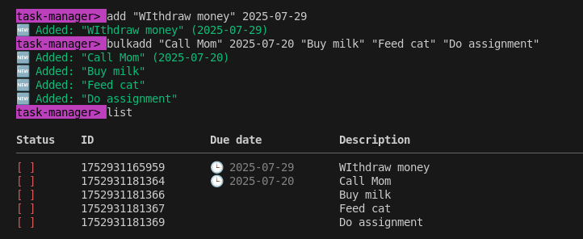
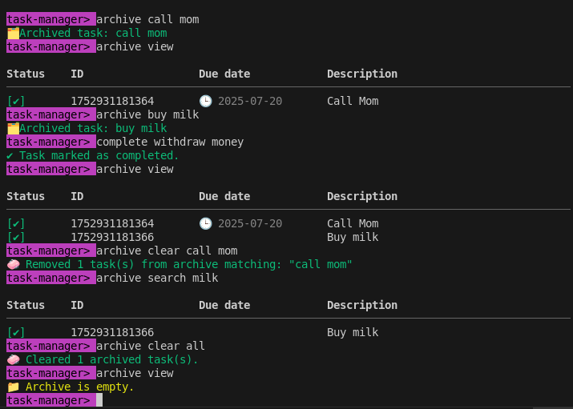
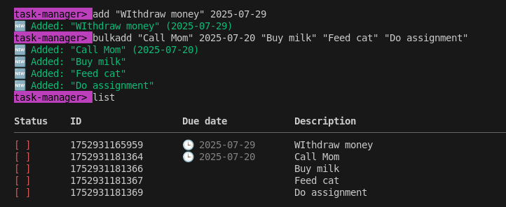
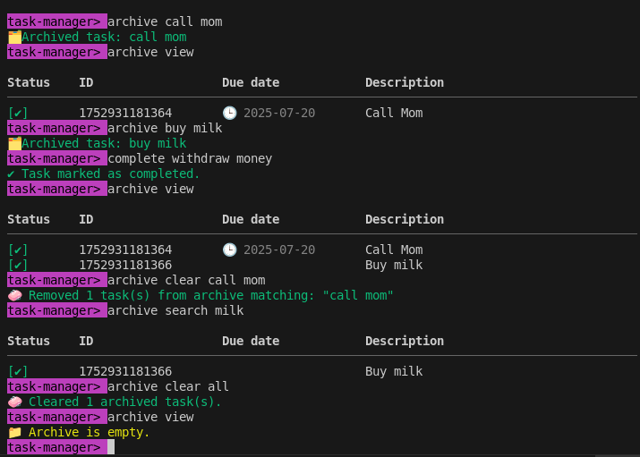
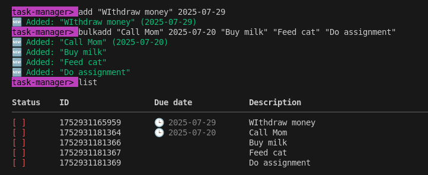
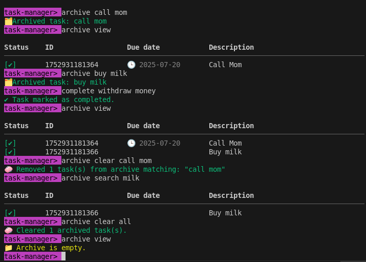

Welcome to the Task Manager CLI — your fast, flexible, and fabulous companion for managing tasks with flair. This isn’t your average command-line tool. It’s efficient, expressive, and smart enough to ignore your capitalization quirks. Yes, you heard that right — no need to care for case, the system will do its magics. 🎩✨
Here’s your trusty command guide. Use these inside the mini-terminal after
launching task-manager.
add "<description>" <due-date> # Add a single task
bulkadd <desc1> <due1> <desc2> <due2> ... # Add multiple tasks at once
list # View all active tasks
complete <description> # Mark a task as completed
delete <description> # Delete a task from active list
archive <description> # Move a completed task to archive
archive view # Display archived tasks
archive search <keyword> # Search archived tasks by keyword
archive clear all # Wipe the entire archive clean
archive clear <description> # Delete specific archived task
clear # Clear the screen (just visuals, not your soul)
help # View this magical guide
exit # Leave the CLI gracefully
💡 Don’t worry about typing "Call mom" or "call MOM" — it all works. We read the vibes, not just the bytes.
"Call mom" (2025-08-01) already exists.
readline for
terminal interaction
colors for fancy outputtasks.json with structure:
{
"active": [],
"archived": []
}
task-manager> bulkadd "Buy milk" 2025-07-20 "Call Mom" 2025-07-21 "Buy milk" 2025-07-20
🆕 Added: "Buy milk" (2025-07-20)
🆕 Added: "Call Mom" (2025-07-21)
âš ï¸ "Buy milk" (2025-07-20) already exists. Skipped.
Tasks are stored in JSON. You can peek inside, but no need to manually edit — the CLI’s got everything under control.
Before launching the Task Manager CLI, make sure you’ve got the following ready to roll:
git clone https://github.com/Njorodev/AltSchool-attendance/Semester_2/task-manager
cd task-manager
Or download the ZIP manually and extract it to your preferred folder.
Run this from inside the project directory:
npm install
This grabs all required packages like
colors, and sets up your CLI environment.
node app.js
Boom — your ASCII splash screen, help guide, and prompt will appear.
✨ Welcome to Task Manager CLI ✨
task-manager>
You’re now fully interactive. The magic awaits 💫
Once inside the CLI, try commands like:
add "Study for finals" 2025-07-22
bulkadd "Buy snacks" 2025-07-23 "Sleep early" 2025-07-24
list
archive "Study for finals"
archive view


To clear the screen and reorient:
clear
To get help:
help
…and the CLI will kindly walk you through every option like a loyal friend. Or an unpaid intern with excellent manners.
To leave the CLI peacefully:
exit
Found a quirk or want to improve the command suite? Fork it, polish it, and let the task-manager shine brighter.
Made with ❤️, sarcasm, and fewer keystrokes than a spreadsheet.